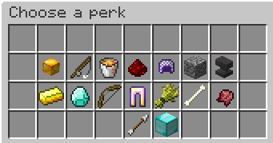

|  |
| A player's perk selection menu, containing every perk unlocked before prestige I. Enchanted items represent the player has selected that perk. |
Perks are upgrades players can purchase to get minor buffs during combat.
Perks can be purchased from the Upgrades NPC starting at level 10. Additional perk slots are unlocked at levels 35 and 70, with a fourth perk slot being purchaseable at level 100 with the Extra Perk Slot renown upgrade unlocked at prestige III.
The level requirement of all perks and perk slots can be bypassed with The Way.
The list of perks available without a prestige are as follows:
| Name | Cost | Reqs. | Description |
| Golden Heads | 500g | [10] | Earned golden apples turn into golden heads. Golden heads are instantly eaten on use and grant the following effects:
|
| Fishing Rod | 1,000g | [10] | Spawn with a fishing rod. |
| Lava Bucket | 1,000g | [10] | Spawn with a lava bucket. Damage dealt by the lava from the bucket will count towards kills and assists. It cannot be placed in the very center of the Pit area. |
| Strength-Chaining | 2,000g | [20] | Deal +8% damage for 7 seconds when you get a kill. If you get another kill within the 7 seconds, restart the timer and add another +8% damage. This effect is capped at 5 kills (+40% damage). |
| Safety First | 3,000g | [20] | Spawn with a chainmail helmet (1 armor bar). |
| Mineman | 3,000g | [30] | Spawn with 24 cobblestone and a diamond pickaxe (Efficiency IV). Killing players gives +3 cobblestone. |
| Bonk! | 2,000g | [35] | The first hit per life you receive from a player is blocked and grants Resistance I (0:02). |
| Trickle-down | 1,000g | [40] | Gold ingots heal 2♥︎ and give 10g more than usual. Trickle-down is affected by Pebble, but not any form of Gold Boost. |
| Lucky Diamond | 4,000g | [40] | 30% chance to upgrade dropped iron armor pieces from kills to diamond. Upgraded pieces warp straight to the killer's inventory; helmets are excluded from the Lucky Diamond perk. |
| Spammer | 4,000g | [40] | Get 3 arrows when hitting a player with an arrow. Additionally, Spammer triples the base gold reward on targets the user shot an arrow in and gives +2 gold on all assists. |
| Bounty Hunter | 2,000g | [50] | Earn +4g on kills. Assists on bountied players grant a percentage share the bounty. Deal +1% damage for every 100 gold of the victim's bounty. Users will be provided with a pair of golden leggings; this perk does not have any effect if the user is not wearing them. |
| Streaker | 8,000g | [50] | When kill streaking, triple the streak XP bonus earned on each kill. |
| Gladiator | 4,000g | [60] | Receive −3% damage for every player in a 12-block radius. This perk only activates when 3 or more players are in range and caps at 10 players (−30%). |
| Vampire | 4,000g | [60] | Don't earn golden apples; instead, heal 0.5♥︎ on every hit (1.5♥︎ on fully charged arrow hits), and get Regeneration I (0:08) on kill. |
Additionally, another fourteen perks can be purchased with renown. While purchasing the perk with renown needs to only be done once, the perk must be purchased with gold
every prestige. Players will need to reach a specific prestige before unlocking these perks; this is shown in the "Requirements" column of the table.| Name | Cost | Reqs. | Description |
| Overheal | 6,000g / 10 renown | I & [70] | Double item healing limits; for instance, up to four Golden Heads can be stored in a player's inventory instead of the usual two. |
| Barbarian | 3,000g / 10 renown | II & [30] | Replaces iron and diamond swords with axes. Axes deal 0.5♥︎ more base damage than corresponding swords. |
| Dirty | 8,000g / 15 renown | II & [80] | Gain Resistance II (0:04) on kill. |
| Rambo | 6,000g / 15 renown | III & [70] | When killing players, instead of earning golden apples, heal to full health. Maximum health is decreased by 2♥︎. |
| Olympus | 6,000g / 20 renown | IV & [70] | When killing players, receive an Olympus Potion instead of a golden apple. Players can only hold one Olympus Potion at once. When drank, it grants the following effects:
|
| Assistant (to the) Streaker | 8,000g / 15 renown | V & [50] | Assists count their participation towards killstreaks. If the user has the Promotion!! renown upgrade, this perk also has the following effects: |
| First Strike | 8,000g / 25 renown | V & [80] | The first hit on a player deals +35% damage and grants the user Speed I (0:05). |
| Co-op Cat | 6,000g / 10 renown | VI & [50] | Receive +50% XP and +50% gold on all assists. |
| Marathon | 8,000g / 20 renown | VI & [90] | The user cannot wear boots. While the user has speed, they will deal +18% damage and receive −18% damage. |
| Soup | 8,000g / 30 renown | VII & [90] | Instead of a golden apple, receive a Tasty Soup when killing a player. Tasty Soup gives the following effects:
|
| Recon | 6,000g / 20 renown | VII & [60] | Every fourth arrow shot at someone rewards the user with 40 XP and deals +50% damage. |
| Conglomerate | 20,000g / 40 renown | VIII & [50] | Kills and assists no longer grant XP. 20% of the XP that would have been earned is converted to gold. Additionally, all players receive gold from Conglomerate on assists (20% of the XP they earned from the assist) regardless of whether or not they had the perk unlocked or active. |
| Kung Fu Knowledge | 10,000g / 40 renown | IX & [100] | The user's melee attacks no longer make contact unless they have no held item. The user's fists deal 3.7♥︎ damage; slightly more than an iron sword. Critical attacks deal reduced damage — instead of 5.55♥︎ damage, only deal 3.95♥︎ damage on critical hits. Every fourth hit on an individual player grants Speed II (0:05). |
| Thick | 10,000g / 45 renown | XI & [90] | Increases maximum health by 2♥︎. |